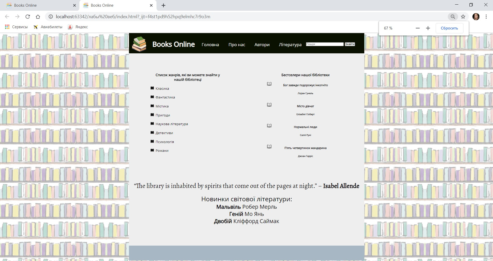
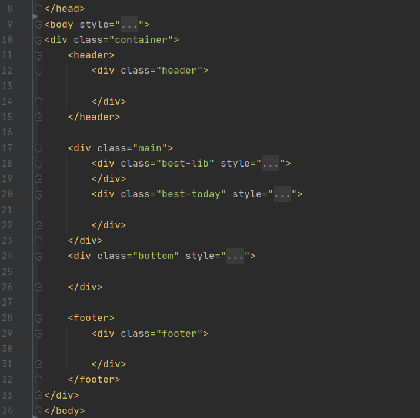

Поставновка задачі
Тема: БЛОЧНА ВЕРСТКА HTML-ДОКУМЕНТУ ЗА МАКЕТОМ.
Мета: придбати практичні навички роботи верстки сторінок засобами CSS, верстки на основі плаваючих елементів, з’ясувати переваги та недоліки типів макетів веб-сторінок
1. У звітному HTML-документі розмістити постановку задачі лабораторної роботи №3.
2. Розробити макет власного сайту. Який тип макету ви використовуєте. Вміти пояснити викладачу.
3. Яку базову концепцію ви застосовуєте при верстці сторінок засобами CSS. Вміти пояснити викладачу.
4. У звітному HTML-документі розмістити скріншот головної сторінки вашого сайту.
5. У звітному HTML-документі розмістити HTML-програмний код макету власного сайту. Вміти пояснити викладачу особливості вашого макету.
6. Засобами HTML та CSS створіть окремо веб-сторінку, заданого вигляду, використовуючи:
1. Розмітку за допомогою таблиці
2. Розмітку за допомогою плаваючих блоків
Головна сторінка

Таблична розмітка
Розмітка блоками
Макет нашого сайту
Код макету

Висновок
На даній лабораторній роботі ми ознакомились із типами макетів сайті та створили макет сайту двума методами розмітки: табличний та блочний. Проаналізувавши різницю між ними, можно зробити висновок, що блочна розмітка займає менше HTML-коду та є сучасним варіантом розмітки.